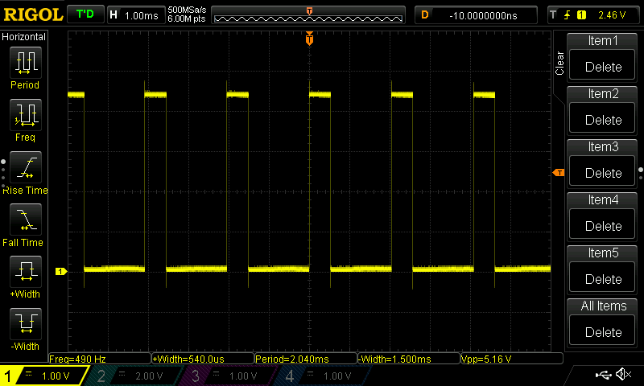
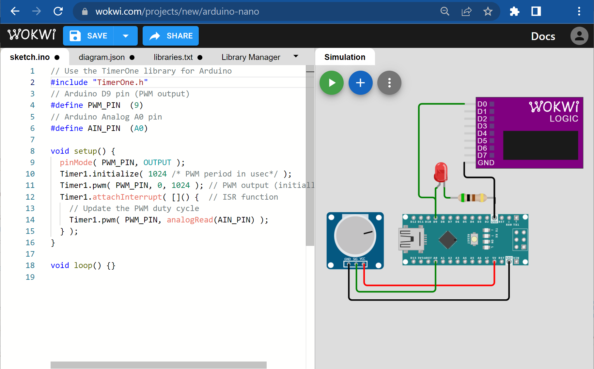
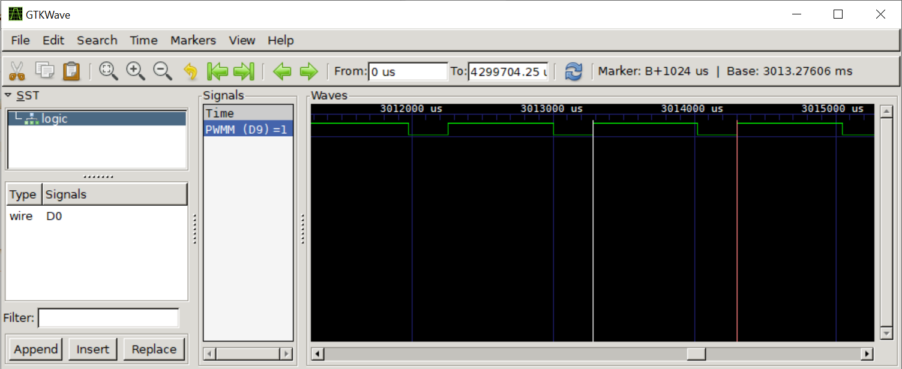
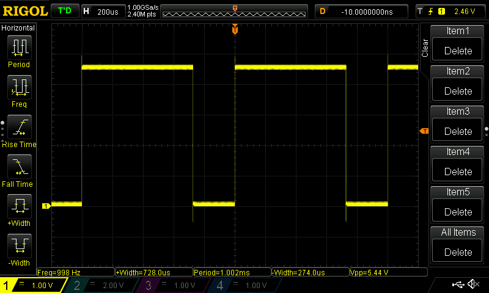
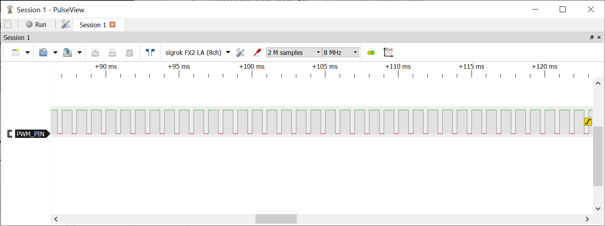
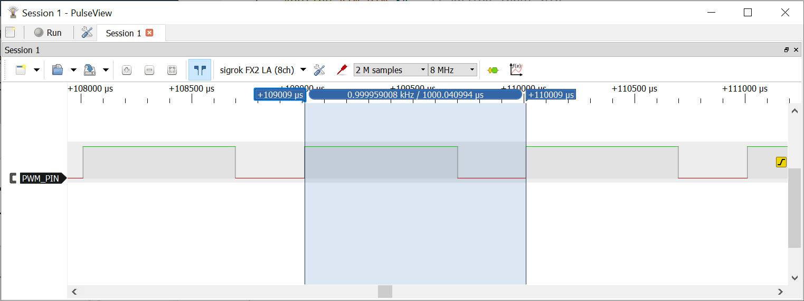
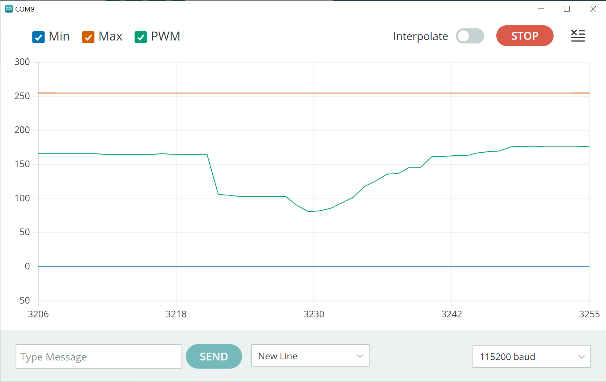
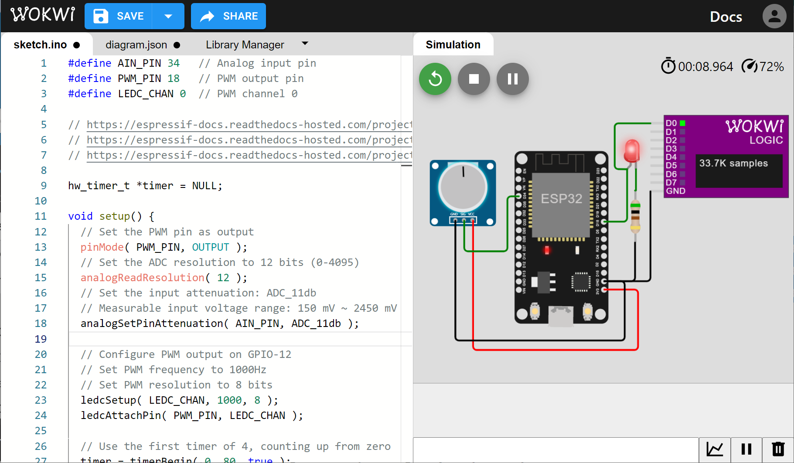
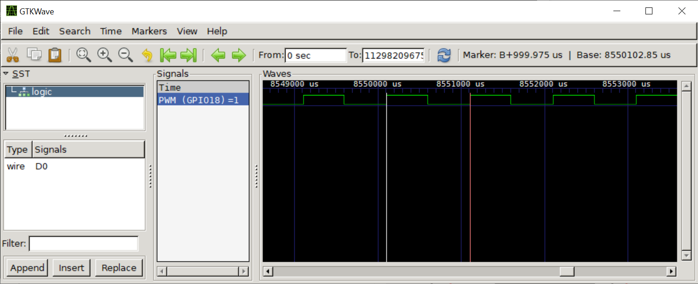
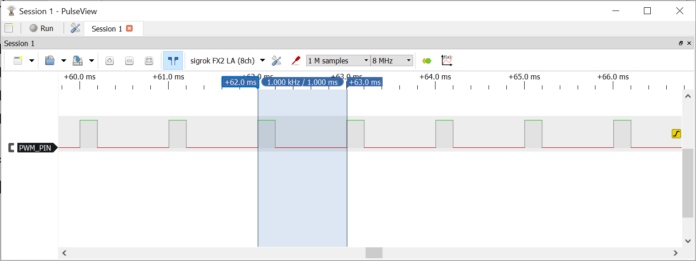

การเขียนโค้ด Arduino เพื่ออ่านค่าอินพุตจาก ADC และสร้างสัญญาณ PWM#
บทความนี้นำเสนอตัวอย่างการเขียนโค้ด Arduino Sketch ด้วยเทคนิคหรือวิธีที่แตกต่างกัน เพื่ออ่านค่าอินพุตจากสัญญาณแอนะล็อก จำนวน 1 ช่องสัญญาณด้วย ADC แล้วนำไปใช้ในการสร้างสัญญาณเอาต์พุตแบบ PWM จำนวน 1 ช่องสัญญาณ และปรับค่าความกว้างของพัลส์ หรือค่า PWM Duty Cycle ตามค่าอินพุตอย่างต่อเนื่อง
Keywords: Arduino Nano / Uno, ESP32, ADC, PWM, PWM-based LED Dimming, WokWi Simulator
▷ คำสั่งของ Arduino สำหรับ ADC และ PWM#
การเขียนโค้ดด้วย Arduino Sketch สำหรับบอร์ด Arduino
เช่น Uno / Nano (ATmega328P) มีคำสั่ง analogRead()
สำหรับอ่านค่าจากอินพุตแบบแอนะล็อกโดยใช้วงจร ADC ภายในไมโครคอนโทรลเลอร์
และมีความละเอียดของข้อมูล 10 บิต
หรือได้ค่าตัวเลขจำนวนเต็มในช่วง 0..1023 และมีคำสั่ง analogWrite()
เพื่อใช้ในการสร้างสัญญาณ PWM (Pulse Width Modulation) เป็นเอาต์พุตที่มีความถี่คงที่
และมีความละเอียดในการปรับค่าความกว้างของพัลส์ขนาด 8 บิต หรือ
ค่าตัวเลขในช่วง 0..255 และเลือกใช้ขาใช้งานได้สูงสุด 6 ช่อง
(ขาหมายเลข 3, 5, 6, 9, 10, 11 สำหรับบอร์ด Uno / Nano)
เนื่องจากต้องใช้วงจร Timers ในการสร้างสัญญาณแบบ SPI
▷ โค้ดตัวอย่าง: Polling Loop#
หากต้องการอ่านค่าจากอินพุตแอนะล็อก เช่น ขา A0 แล้วนำมาใช้ในการสร้างสัญญาณ PWM เช่น ขา D9 ของบอร์ด Uno / Nano โดยทำซ้ำไปเรื่อย ๆ ก็มีตัวอย่างดังนี้
// Arduino D9 pin (PWM frequency 490Hz)
#define PWM_PIN (9)
// Arduino Analog A0 pin
#define AIN_PIN (A0)
void setup() {}
void loop() {
// read an analog value (10-bit) from the A0 pin,
// use it to update the PWM duty cycle (8-bit).
analogWrite( PWM_PIN, analogRead(A0)>>2 );
}
เนื่องจากคำสั่ง analogWrite() จะได้ค่าตัวเลขจำนวนเต็มที่มีค่าในช่วง 0..1023
แต่ค่าที่นำไปใช้กับคำสั่ง analogWrite() จะต้องอยู่ในช่วง 0..255
ดังนั้นจึงนำค่าที่อ่านได้จาก ADC มาสเกลค่าแบบเชิงเส้นในลดลง โดยการหารด้วย 4
หรือเลื่อนข้อมูลบิตไปทางขวา 2 ตำแหน่ง
การเลือกใช้ขา D9 เพื่อสร้างสัญญาณ PWM จะทำให้ได้สัญญาณ PWM ที่มีความถี่ 490 Hz โดยประมาณ

รูป: ตัวอย่างคลื่นสัญญาณที่วัดได้จากขา D9 ด้วยออสซิลโลสโคป RIGOL DS1054Z
▷ โค้ดตัวอย่าง: Arduino TimerOne Library#
หากต้องการให้การอ่านค่าจาก ADC และอัปเดตค่า Duty Cycle ของสัญญาณ PWM เกิดขึ้นด้วยตามคาบเวลาคงที่ (Periodic) ก็สามารถใช้งานวงจร Timer1 ของชิป ATmega328P ได้ เนื่องจากวงจร Timer1 จะถูกใช้สำหรับการสร้างสัญญาณ PWM ดังนั้นจะต้องใช้ขา D9 หรือ D10
ในการใช้งาน Timer1 จะใช้ไลบรารีที่มีชื่อว่า TimerOne ซึ่งทำให้ง่ายและสะดวกในการเขียนโค้ด มีคำสั่งให้ใช้งาน เช่น
initialize( period ): เริ่มต้นใช้งาน Timer1 โดยจะต้องระบุคาบเวลา (หน่วยเป็น ไมโครวินาที)setPeriod( period ): กำหนดคาบเวลาสำหรับการทำงานของ Timer1pwm( pin, duty, period ): สร้างสัญญาณ PWM โดยใช้ Timer1 ซึ่งจะต้องเลือกขาเอาต์พุต 9 หรือ 10 และกำหนดค่า Duty Cycle ที่ไม่เกินค่าคาบเวลาsetPwmDuty( pin, duty ): ปรับค่า Duty Cycle สำหรับขาสัญญาณ PWM ที่ต้องการ (ขาเอาต์พุต 9 หรือ 10)attachInterrupt( void (*isr)() )เปิดใช้งาน
ข้อสังเกต: การใช้ Timer1 จะส่งผลต่อการใช้คำสั่ง analogWrite()
สำหรับขา D9 และ D10 เช่น ความถี่หรือคาบเวลาของ PWM
ดังนั้นจะต้องหลีกเลี่ยงการใช้งานฟังก์ชันดังกล่าว
โค้ดต่อไปนี้สาธิตการใช้งานไลบรารี TimerOne เพื่อสร้างสัญญาณ PWM ที่ขา D9 และกำหนดคาบเวลาให้เท่ากับ 1024 ไมโครวินาที (ได้ความถี่เท่ากับ 976.56 Hz) และมีการเปิดใช้งานอินเทอร์รัพท์ของ Timer1 ตามคาบเวลาที่กำหนดไว้ และฟังก์ชัน ISR ที่เกี่ยวข้อง จะทำหน้าที่อ่านค่าจากขาแอนะล็อก A0 แล้วนำมาอัปเดตค่า Duty Cycle ของสัญญาณ PWM
// Use the TimerOne library for Arduino
#include "TimerOne.h"
// Arduino D9 pin (PWM output)
#define PWM_PIN (9)
// Arduino Analog A0 pin
#define AIN_PIN (A0)
// PWM Period
#define PWM_PERIOD_US (1024)
void setup() {
pinMode( PWM_PIN, OUTPUT );
Timer1.initialize( PWM_PERIOD_US /* PWM period in usec*/ );
Timer1.pwm( PWM_PIN, 0, PWM_PERIOD_US ); // PWM output (initially 0%)
Timer1.attachInterrupt( []() { // ISR function
// Update the PWM duty cycle
Timer1.setPwmDuty( PWM_PIN, analogRead(AIN_PIN) );
} );
}
void loop() {}

รูป: ผังวงจรและการเขียนโค้ดเพื่อจำลองการทำงานด้วย WokWi Simulator

รูป: สัญญาณดิจิทัลที่บันทึกได้จากการจำลองการทำงานด้วย WokWi Simulator และเปิดไฟล์ .vcd ด้วย GTKWave Viewer (วัดความกว้างของคาบได้ 1024 usec)
▷ โค้ดตัวอย่าง: AVR C (Bare-Metal)#
ตัวอย่างนี้สาธิตการเขียนโดยไม่ใช้คำสั่งหรือไลบรารีของ Arduino
เพื่อเปิดใช้งานวงจร ADC โดยใช้ฟังก์ชัน initADC() ให้อ่านค่าที่ขาอินพุต A0
และมีการเปิดใช้งานอินเทอร์รัพท์ของวงจร ADC ด้วย
นอกจากนั้นแล้วยังมีการเปิดใช้งานวงจร Timer1 โดยใช้ฟังก์ชัน
initTimer1() สำหรับการสร้างสัญญาณ PWM
ที่ขา PB1 / D9 และมีความถี่เท่ากับ 1000Hz
การทำงานของวงจร Timer1 ในตัวอย่างนี้
จะทำงานในโหมด Phase-Correct PWM
และใช้ตัวหารความถี่ (Prescaler) เท่ากับ 8
มีสูตรการคำนวณค่าเพื่อเขียนลงในรีจิสเตอร์ ICR1 ดังนี้
เมื่อได้ทำคำสั่งในฟังก์ชัน initADC() แล้ว วงจร ADC จะเริ่มทำงาน
และอ่านค่าจากขาอินพุต A0 แล้วแปลงค่าแอนะล็อก ให้ได้ข้อมูลขนาด 10 บิต
เก็บไว้ในรีจิสเตอร์ ADC จากนั้นจะเกิดอินเทอร์รัพท์ และเรียกฟังก์ชัน
ISR(ADC_vect) ให้ทำงานโดยอัตโนมัติ
ฟังก์ชันนี้มีหน้าที่นำค่าจากรีจิสเตอร์ ADC ไปใช้ในการอัปเดตค่า
Duty Cycle ของสัญญาณ PWM โดยจะต้องเขียนค่าลงในรีจิสเตอร์ OCR1A
ของวงจร Timer1
ค่าในรีจิสเตอร์ OCR1A ที่มีขนาด 16 บิต เป็นค่าสำหรับการเปรียบเทียบกับค่าของตัวนับขนาด 16 บิต
ของ Timer1 และเป็นตัวกำหนดความกว้างของพัลส์ของสัญญาณเอาต์พุต
#include <avr/io.h>
#include <avr/interrupt.h>
#define PWM_PIN (PB1) // Arduino OC1A/PB1/D9 pin
#define FREQ_HZ (1000UL)
#define PRESCALER (8)
#define TOP_VALUE (F_CPU/(2 * PRESCALER * FREQ_HZ))
// The ADC interrupt flag will be cleared automatically
// after the ISR(ADC_vect) is called.
ISR(ADC_vect) {
OCR1A = (uint16_t)(ADC*TOP_VALUE>>10);
}
int main(void) {
DDRB |= (1 << PWM_PIN);
initADC();
initTimer1();
sei(); // Enable global interrupts
while (1) {}
}
void initADC() {
// Set PC0/A0 as an input pin
DDRC &= ~(1 << DDC0);
// Disable Digital Input Buffer on A0
DIDR0 |= (1<<ADC0D);
// Set reference voltage to AVCC
ADMUX = (1 << REFS0);
// Right-Adjust Result (ADLAR=0)
ADMUX &= ~(1<<ADLAR);
// Select A0 as ADC input ADMUX[3:0]="0000"
ADMUX &= ~((1<<MUX3)|(1<<MUX2)|(1<<MUX1)|(1<<MUX0));
// Set ADC prescaler to 128 (ADPS[2:0]="111")
// 16MHz/128 = 125kHz ADC clock
ADCSRA = (1<<ADPS2) | (1<<ADPS1) | (1<<ADPS0);
// Enable ADC (Free running), enable ADC interrupt
ADCSRB = 0; // ADTS[2:0]="000"
ADCSRA |= (1<<ADEN) | (1<<ADATE) | (1<<ADIE) | (1<<ADSC);
//ADCSRA |= (1<<ADSC); // Start the next conversion
}
// Use Timer1 to create a PWM signal (PWM Phase-Correct Mode)
void initTimer1() {
TCCR1A = TCCR1B = 0;
TCNT1 = 0x0000;
// Set the ICR1 register to define the TOP value
ICR1 = (uint16_t)(TOP_VALUE-1);
// Set the OCR1A register to define the PWM duty cycle
OCR1A = 0;
// Set Timer1 in Phase-correct PWM mode (mode 10)
TCCR1A |= (1 << WGM11);
TCCR1B |= (1 << WGM13);
// Set the output compare mode to clear OC1A on compare match
// and set on TOP (non-inverting)
TCCR1A |= (1 << COM1A1);
// Set the prescaler to 8 (CLK/8)
TCCR1B |= (1 << CS11);
}

รูป: ตัวอย่างคลื่นสัญญาณที่วัดได้จากขา D9 ด้วยออสซิลโลสโคป RIGOL DS1054Z
▷ โค้ดตัวอย่างสำหรับ ESP32: Polling Loop#
การเขียนโค้ดสำหรับ ESP32 ด้วย Arduino-ESP32 API มีความแตกต่างจากการใช้ Arduino API สำหรับ Uno / Nano อยู่บ้าง และแนะนำให้ศึกษาการใช้คำสั่งต่าง ๆ ที่เกี่ยวข้องกับการทำงานของวงจรภายในชิป ESP32 เช่น ADC, LEDC (PWM) และ Timer
ตัวอย่างคำสั่งที่เกี่ยวข้องกับการใช้งาน Arduino-ESP32 LEDC (LED Control) API ได้แก่
analogWriteResolution(...)กำหนดความละเอียดหรือจำนวนบิตสำหรับสัญญาณ PWM ทุกช่องanalogWriteFrequency(...)กำหนดความถี่ของสัญญาณ PWM ทุกช่องanalogWrite(...)กำหนดค่าความกว้างพัลส์สำหรับสัญญาณ PWM ตามขาหมายเลข GPIO ที่จะใช้งานledcSetup(...)กำหนดค่าเริ่มต้นสำหรับใช้งานวงจร LEDC และเลือกใช้ช่องสัญญาณของ LEDC (LEDC Channel)ledcAttachPin(...)เลือกใช้ขา GPIO สำหรับช่องสัญญาณของ LEDC
ตัวอย่างคำสั่งที่เกี่ยวข้องกับการใช้งาน Arduino-ESP32 ADC API ได้แก่
analogReadResolution(...)กำหนดความละเอียดหรือจำนวนบิตในการแปลงข้อมูลโดย ADCanalogSetPinAttenuation(...)กำหนดระดับการลดทอนสัญญาณอินพุตแอนะล็อกadc1_config_width(...)เป็นคำสั่งของ ESP-IDF กำหนดความละเอียดหรือจำนวนบิตadc1_config_channel_atten(...)เป็นคำสั่งของ ESP-IDF กำหนดระดับการลดทอนสัญญาณอินพุตแอนะล็อกadc1_get_raw(...)เป็นคำสั่งของ ESP-IDF เพื่ออ่านค่าจาก ADC
ตัวอย่างคำสั่งที่เกี่ยวข้องกับการใช้งาน Arduino-ESP32 Timer API ได้แก่
timerBegin(...)เลือกใช้งาน Timer ตามหมายเลขที่กำหนด ตั้งค่าตัวหารความถี่ เลือกโหมดการนับขึ้นtimerAlarmWrite(...)เปิดใช้งานอินเทอร์รัพท์สำหรับ TimertimerAttachInterrupt(...)ตั้งค่าสำหรับฟังก์ชัน ISR ให้ทำงานเมื่อเกิออินเทอร์รัพท์timerAlarmEnable(...)เริ่มต้นการทำงานของวงจร Timer
ชิป ESP32 มีวงจร ADC เป็นแบบ SAR (Successive Approximation Register) มีอยู่ 2 ชุด คือ ADC1 (ใช้กับขา GPIO32 - GPIO39) และ ADC2 (แต่ไม่แนะนำให้ใช้ ADC2 ถ้าเปิดใช้งานวงจร WiFi)
ในโค้ดตัวอย่างต่อไปนี้ ได้เลือกใช้ขา GPIO-34 ซึ่งตรงกับวงจร ADC2 และใช้ขา GPIO-18 สำหรับสัญญาณเอาต์พุต PWM (ตั้งค่าความถี่ 1000 Hz และความละเอียด 8 บิต)
#define AIN_PIN 34 // Analog input pin
#define PWM_PIN 18 // PWM output pin
void setup() {
#ifdef DEBUG
Serial.begin(115200);
#endif
// Set the PWM pin as output
pinMode( PWM_PIN, OUTPUT );
// Configure PWM output: frequency=1000Hz, resolution=8bits
analogWriteResolution( 8 );
analogWriteFrequency( 1000 );
// Set the ADC resolution to 12 bits (0-4095)
analogReadResolution( 12 );
// Set the input attenuation: ADC_11db
// Measurable input voltage range: 150 mV ~ 2450 mV
analogSetPinAttenuation( AIN_PIN, ADC_11db );
}
void loop() {
// Read analog input (12-bit) and
// set the PWM duty cycle (8-bit)
uint32_t value = analogRead( AIN_PIN )>>4;
analogWrite( PWM_PIN, value );
delay(1);
#ifdef DEBUG
Serial.print("Min:0,");
Serial.print("Max:255,PWM:");
Serial.println( value);
delay(10);
#endif
}
ตัวอย่างการวัดสัญญาณเอาต์พุตจากบอร์ด ESP32 โดยใช้อุปกรณ์ USB Logic Analyzer มีดังนี้

รูป: ตัวอย่างรูปคลื่นสัญญาณจริง เมื่อใช้โปรแกรม PulseView อ่านค่าจากอุปกรณ์ USB Logic Analyzer

รูป: การวัดสัญญาณ PWM (ได้คาบกว้างประมาณ1000 ไมโครวินาที)
ถ้ามีการเพิ่ม #define DEBUG ในโค้ด ก็จะมีการส่งข้อความจาก ESP32 ออกมา
ซึ่งเป็นค่าตัวเลขสำหรับการอัปเดต PWM Duty Cycle อยู่ในช่วง 0..255

รูป: การส่งข้อมูลมาผ่าน USB-to-Serial มาแสดงรูปกราฟด้วย Arduino Serial Plotter ในขณะที่มีการปรับหมุน Potentiometer ที่นำมาใช้สำหรับสร้างสัญญาณอินพุต-แอนะล็อก
ถ้าต้องการใช้งาน ADC ร่วมกับ Hardware Timer เพื่ออ่านค่าจากอินพุตด้วย ADC และเกิดซ้ำด้วยระยะเวลาคงที่ (เช่น ทุก ๆ 100 มิลลิวินาที) ก็มีแนวทางดังนี้
#define AIN_PIN 34 // Analog input pin
#define PWM_PIN 18 // PWM output pin
#define LEDC_CHAN 0 // PWM channel 0
hw_timer_t *timer = NULL;
void setup() {
// Set the PWM pin as output
pinMode( PWM_PIN, OUTPUT );
// Configure PWM output on GPIO-18
// Set PWM frequency to 1000Hz
// Set PWM resolution to 8 bits
ledcSetup( LEDC_CHAN, 1000, 8 );
ledcAttachPin( PWM_PIN, LEDC_CHAN );
// Set the ADC resolution to 12 bits (0-4095)
analogReadResolution( 12 );
// Set the input attenuation: ADC_11db
// Measurable input voltage range: 150 mV ~ 2600 mV
analogSetPinAttenuation( AIN_PIN, ADC_11db );
// Use the first timer, clk divider=80, counting up
timer = timerBegin( 0, 80, true ); // 1MHz tick rate
// Configure the hardware timer
timerAttachInterrupt( timer, [](){
// Read the ADC input and set the PWM duty cycle
ledcWrite( LEDC_CHAN, analogRead( AIN_PIN ) >> 4 );
}, true );
// Attach ISR function to Timer 0, 10000 usec period
timerAlarmWrite( timer, 10000, true );
// Enable the timer alarm
timerAlarmEnable( timer );
}
void loop() {
}
หรือจะลองเขียนโค้ด โดยใช้คำสั่งของ ESP-IDF สำหรับการตั้งค่าและอ่านค่าจาก ADC
#include "driver/adc.h"
#include "soc/adc_channel.h"
#define ADC1_CHAN ADC1_GPIO34_CHANNEL
#define PWM_PIN 18 // PWM output pin
#define LEDC_CHAN 0 // PWM channel 0
hw_timer_t *timer = NULL;
void setup() {
// Set the PWM pin as output
pinMode( PWM_PIN, OUTPUT );
// Configure PWM output on GPIO-18
// Set PWM frequency to 1000Hz
// Set PWM resolution to 8 bits
ledcSetup( LEDC_CHAN, 1000, 8 );
ledcAttachPin( PWM_PIN, LEDC_CHAN );
// Configure ADC1 Channel associated with GPIO-34
// Set the ADC resolution to 12 bits
// Set the ADC attenuation level to 11dB
adc1_config_width( ADC_WIDTH_12Bit );
adc1_config_channel_atten( ADC1_CHAN, ADC_ATTEN_DB_11 );
// Use the first timer, counting up, 1MHz tick rate
timer = timerBegin( 0, 80, true );
// Configure the hardware timer
timerAttachInterrupt( timer, [](){
// Read the ADC channel and set the PWM duty cycle
ledcWrite( LEDC_CHAN, adc1_get_raw(ADC1_CHAN) >> 4 );
}, true );
// Attach ISR function to Timer 0, 10000 usec period
timerAlarmWrite( timer, 10000, true );
// Enable the timer alarm
timerAlarmEnable( timer );
}
void loop() {
}

รูป: การจำลองการทำงานของโค้ดแบบเสมือนจริงด้วย WokWi Simulator

รูป: การวัดคาบของสัญญาณ PWM ที่ได้จากการจำลองการทำงานของโค้ดแบบเสมือนจริง

รูป: ตัวอย่างรูปคลื่นสัญญาณจริงจากบอร์ด ESP32 โดยใช้อุปกรณ์ USB Logic Analyzer
▷ กล่าวสรุป#
บทความนี้นำเสนอตัวอย่างการเขียนโค้ด Arduino Sketch ใน 3 รูปแบบ เพื่ออ่านค่าจากสัญญาณแอนะล็อกอินพุตแล้วนำมาใช้กำหนดความกว้างพัลส์ของสัญญาณ PWM สำหรับบอร์ด Arduino Uno / Nano และบอร์ด ESP32
This work is licensed under a Creative Commons Attribution-ShareAlike 4.0 International License.
Created: 2023-05-17 | Last Updated: 2023-05-17